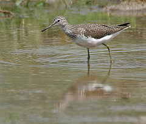
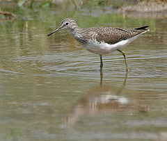

| Green Sandpiper | |
|---|---|
|  | |
| Adult in breeding plumage in Keoladeo National Park, Bharatpur, Rajasthan (India) | |
| Conservation status | |
| Binomial name | |
| Tringa ochropus Linnaeus, 1758 |
| Green Sandpiper | |
|---|---|
|  | |
| Adult in breeding plumage in Keoladeo National Park, Bharatpur, Rajasthan (India) | |
| Conservation status | |
| Binomial name | |
| Tringa ochropus Linnaeus, 1758 |
The Green Sandpiper, Tringa ochropus, is a small wader (shorebird) of the Old World. It represents an ancient lineage of the genus Tringa; is only close living relative is the Solitary Sandpiper (T. solitaria). They both have brown wings with little light dots, and a delicate but contrasting neck and chest pattern. In addition, both species nest in trees, unlike most other scolopacids.[1]
Given its basal position in Tringa, it is fairly unsurprising that suspected cases of hybridisation between this species and the Common Sandpiper (A. hypoleucos) of the sister genus Actitis have been reported.

-_In_Breeding_plumage_at_Bharatpur_I_IMG_5533.jpg){kind=link}